Cinnamon Roll Wreath with Apples

- Granulated sugar
- Ground cinnamon
- Unsalted butter
- Pazazz apples
- Cream cheese
- Milk
- Vanilla extract
- Powdered sugar
- finish
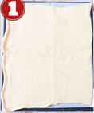
Place a large piece of parchment paper on a flat work surface. Place both sheets of crescent roll dough slightly overlapping on the parchment paper and press the seams together to form one large crescent roll rectangle.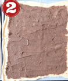
Once you’ve sliced the cinnamon roll tube in half, separate the two halves, and make sure the cinnamon butter and apples are facing up on both halves.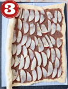
Core and thinly slice one Pazazz apple, then place the slices on top of the cinnamon sugar butter in an even layer, not overlapping. Overlapping the apples will make it difficult to roll up and form into the wreath.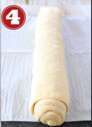
Roll the crescent roll dough up tightly over the apples and the cinnamon sugar butter into a tube.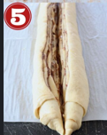
Use a sharp knife to slice lengthwise through the middle of the cinnamon roll tube.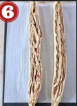
Use a sharp knife to slice lengthwise through the middle of the cinnamon roll tube.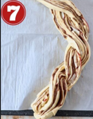
Once you’ve sliced the cinnamon roll tube in half, separate the two halves, and make sure the cinnamon butter and apples are facing up on both halves.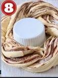
Bring the two ends of the braid together to form the wreath, then transfer the wreath on the parchment paper over to a baking sheet. Bake at 350°F for 20-25 minutes, or until the entire cinnamon roll wreath is golden brown.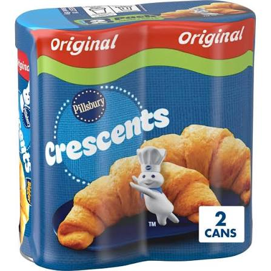
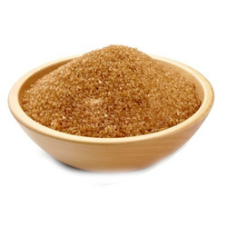
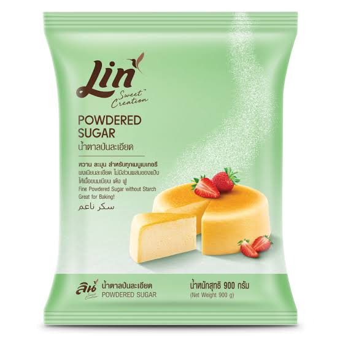
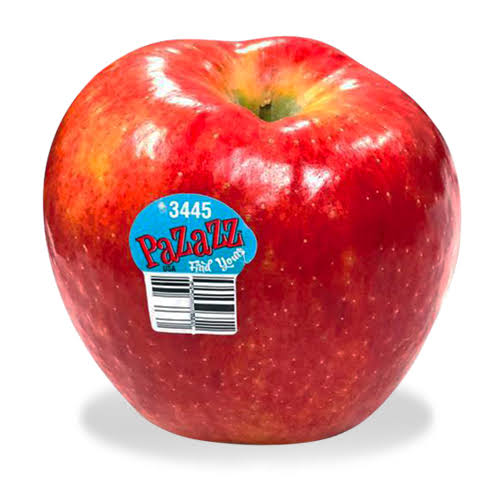
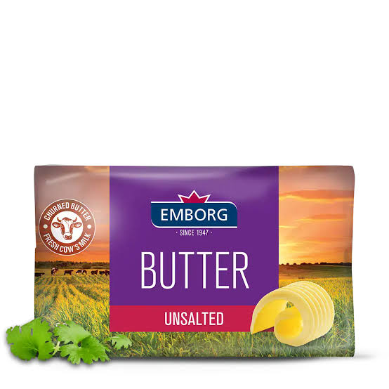
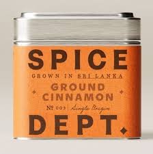
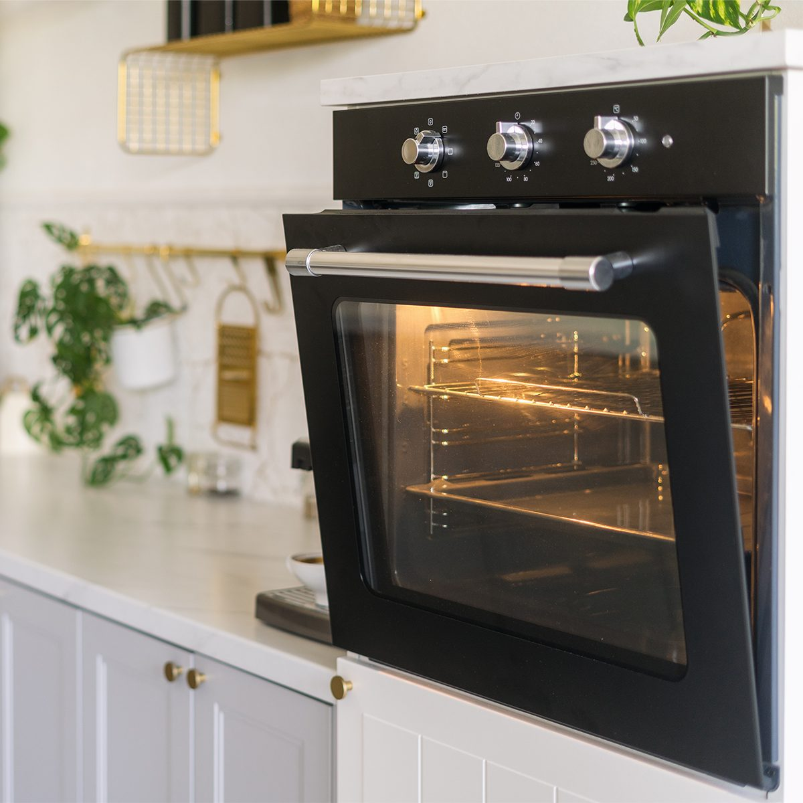
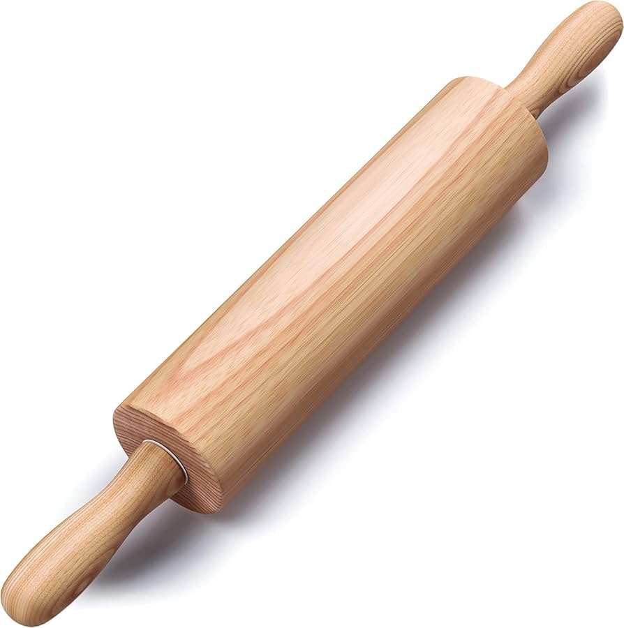
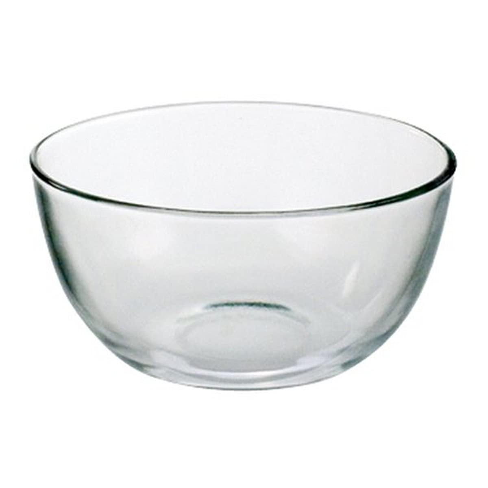